Fuerza, con calma y constancia
Rutina de cuerpo completo para tonificar, ganar músculo y perder grasa poco a poco. Ningún ejercicio requiere apoyar el pecho. Marca el círculo de cada ejercicio a medida que lo completes.
Piernas y espalda
0/6 completadosPrensa de piernas
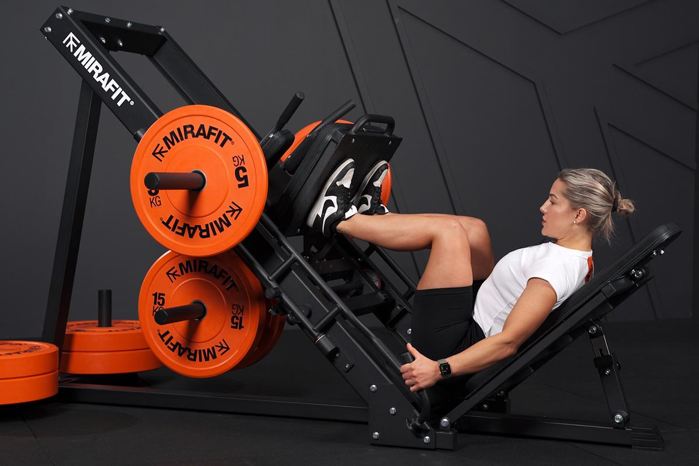
- i.Siéntate con la espalda bien apoyada, pies separados al ancho de la cadera.
- ii.Empuja la plataforma estirando las piernas, sin bloquear del todo las rodillas.
- iii.Baja de forma controlada hasta casi 90°. Exhala al empujar, inhala al bajar.
✦Tip: mantén siempre la espalda pegada al respaldo.
✦Evita: que las rodillas se metan hacia adentro.
Curl femoral
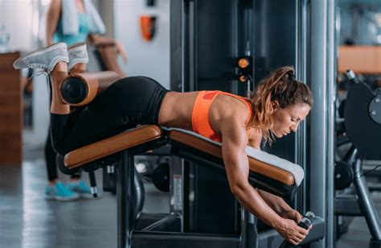
- i.Ajusta la máquina para que el rodillo quede justo sobre el talón.
- ii.Flexiona la rodilla llevando el talón hacia el glúteo, controlada.
- iii.Aguanta un segundo arriba y vuelve lento, sin soltar de golpe.
✦Tip: el movimiento lento trabaja mejor el músculo que hacerlo rápido.
✦Evita: levantar la cadera del asiento para impulsarte.
Gemelos en máquina

- i.Puntas de los pies en la plataforma, talones al aire.
- ii.Sube los talones al máximo, notando el trabajo en la pantorrilla.
- iii.Baja despacio hasta sentir un buen estiramiento, sin rebotar.
✦Tip: aguanta 1 segundo arriba antes de bajar.
Jalón al pecho
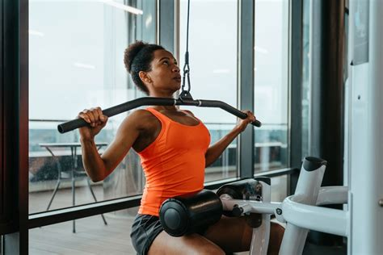
- i.Siéntate y sujeta la barra con las manos algo más abiertas que los hombros.
- ii.Tira hacia la parte alta del pecho, llevando los codos abajo y atrás.
- iii.Sube controlando el peso, sin dejar que "tire" de ti de golpe.
✦Tip: lleva los codos hacia los bolsillos de atrás.
✦Evita: echar el cuerpo muy atrás para ayudarte con el peso.
Remo sentado
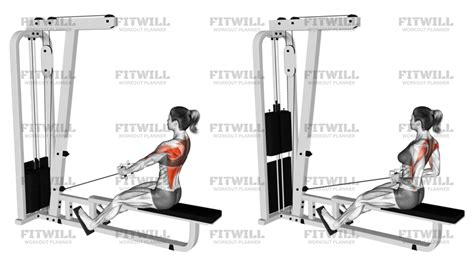
- i.Rodillas algo flexionadas, espalda recta, sujeta el asa.
- ii.Tira hacia el abdomen, juntando los omóplatos al final.
- iii.Vuelve despacio dejando que los brazos se estiren, sin redondear la espalda baja.
✦Tip: el pecho va hacia arriba y adelante al tirar, no hacia abajo.
Plancha abdominal
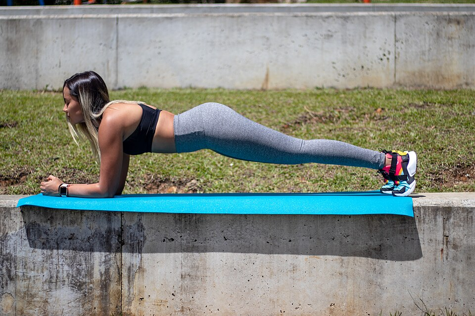
- i.Apóyate en los antebrazos y puntas de los pies, codos bajo los hombros.
- ii.Aprieta abdomen y glúteos, línea recta de cabeza a talones.
- iii.Mantén la postura respirando con normalidad.
✦Evita: levantar demasiado la cadera o dejarla caer.
✦Cierra el día con 5 minutos de estiramiento suave de piernas y espalda.
Glúteo, hombros y brazos
0/6 completadosSentadilla guiada
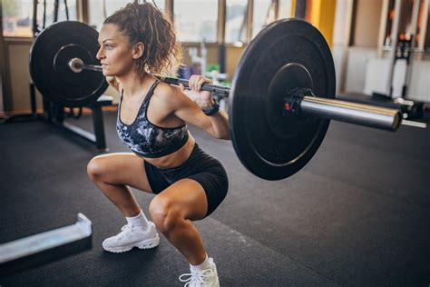
- i.Pies al ancho de los hombros. Si usas mancuerna, sujétala frente al pecho.
- ii.Baja como si te fueras a sentar, cadera hacia atrás y abajo.
- iii.Baja hasta donde te sientas cómoda y sube empujando con los talones.
✦Tip: mira al frente y mantén el pecho "orgulloso".
✦Evita: que las rodillas se junten hacia adentro.
Hip thrust
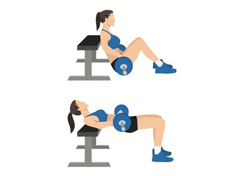
- i.Omóplatos en el borde del banco, pies en el suelo, rodillas flexionadas.
- ii.Coloca el peso sobre la cadera, o usa la máquina si el gym la tiene.
- iii.Empuja la cadera arriba apretando el glúteo, línea recta hombros–rodillas.
✦Tip: aprieta fuerte el glúteo arriba, como sujetando una moneda.
Extensión de cuádriceps
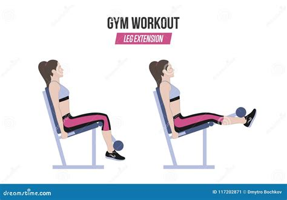
- i.Espalda apoyada, rodillo justo sobre el tobillo.
- ii.Estira las piernas arriba sin bloquear del todo la rodilla.
- iii.Baja despacio controlando el peso todo el recorrido.
✦Tip: no necesitas mucho peso aquí — controla mejor que cargar de más.
Elevaciones laterales
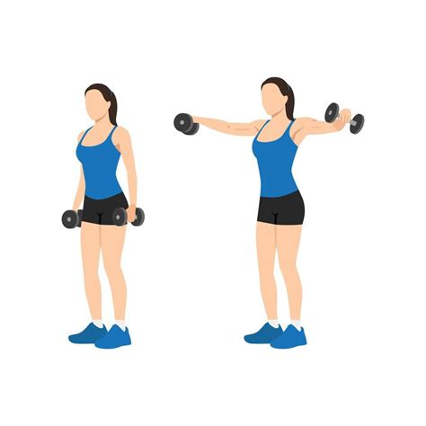
- i.De pie, una mancuerna ligera en cada mano, brazos a los lados.
- ii.Levanta los brazos a los lados hasta la altura del hombro.
- iii.Baja despacio y controlada. Empieza con poco peso.
✦Evita: usar impulso del cuerpo; si lo necesitas, baja el peso.
Curl de bíceps
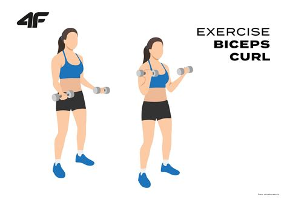
- i.De pie o sentada, mancuernas a los lados, palmas hacia adelante.
- ii.Flexiona los codos llevando el peso hacia los hombros, sin moverlos del cuerpo.
- iii.Baja despacio hasta estirar el brazo casi del todo.
✦Tip: los codos se quedan "pegados" a las costillas todo el rato.
Extensión de tríceps
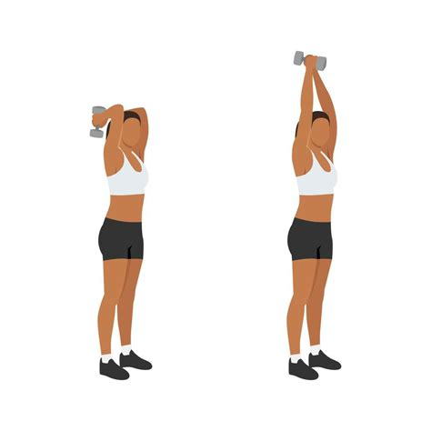
- i.De pie frente a la polea alta, codos pegados a las costillas.
- ii.Estira los brazos hacia abajo sin mover los codos.
- iii.Vuelve despacio, sin dejar que el peso "tire" de golpe.
✦Evita: abrir los codos hacia los lados.
✦Cierra el día con 5 minutos de estiramiento de hombros, brazos y glúteo.
Full body de refuerzo
0/6 completadosPeso muerto rumano
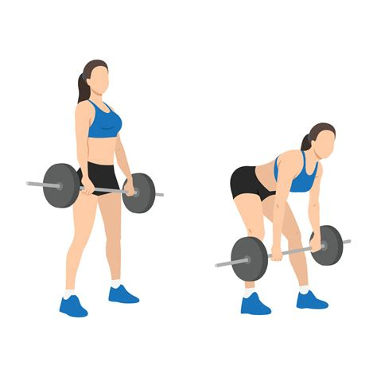
- i.De pie, mancuernas frente a los muslos, rodillas casi rectas.
- ii.Empuja la cadera atrás mientras bajas las mancuernas pegadas a las piernas.
- iii.Baja hasta donde te lo permita la flexibilidad y sube apretando el glúteo.
✦Tip: es un movimiento de cadera, no de espalda.
✦Evita: redondear la espalda baja al bajar el peso.
Zancadas o step-ups
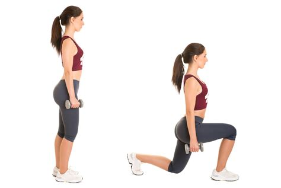
- i.Zancada: paso adelante, baja doblando ambas rodillas a 90°, vuelve al inicio.
- ii.Step-up (más fácil): sube a un banco con una pierna, empuja con el talón y baja controlada.
- iii.Completa todas las reps de un lado y luego el otro.
✦Tip: si es novata, empieza con step-ups — es más fácil de equilibrar.
Face pull
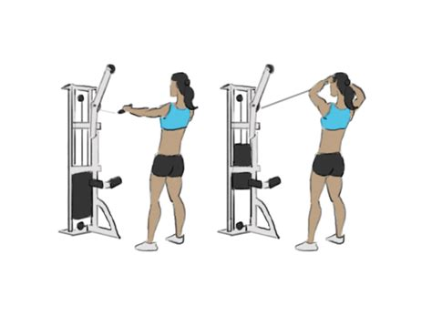
- i.Polea a la altura de la cara, agarra la cuerda con ambas manos.
- ii.Tira hacia tu cara separando las manos al final, codos altos.
- iii.Vuelve despacio a la posición inicial.
✦Tip: excelente para la postura — usa poco peso y prioriza técnica.
Gemelos
- i.Igual que el Día A: sube los talones al máximo, aguanta 1 segundo, baja despacio.
- ii.Si usas la prensa, apoya solo la punta de los pies y empuja con los tobillos.
Curl martillo
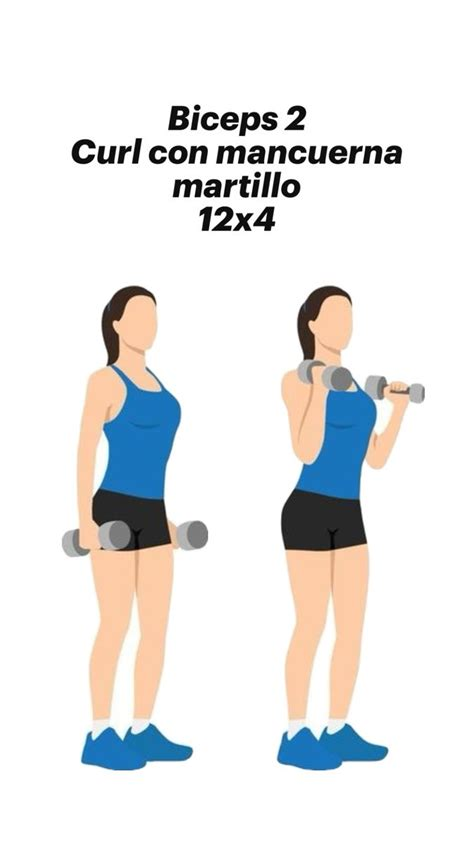
- i.Igual que el curl normal, palmas mirándose entre sí, como sujetando un martillo.
- ii.Sube y baja controlado, codos pegados al cuerpo.
✦Tip: esta variante también trabaja el antebrazo.
Plancha lateral
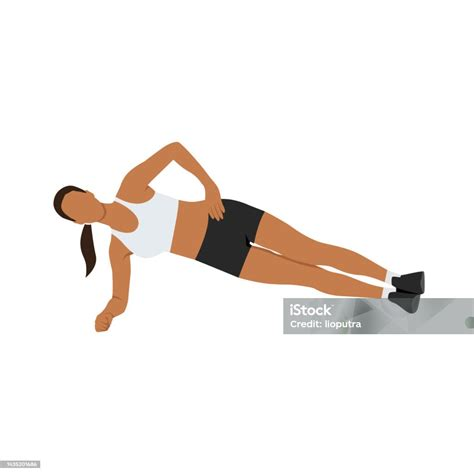
- i.Túmbate de lado, apóyate en el antebrazo y el lateral del pie.
- ii.Eleva la cadera formando una línea recta de cabeza a pies.
- iii.Mantén y luego cambia de lado.
✦Tip: si es muy difícil, apoya también la rodilla de abajo.
✦Cierra el día con 5 minutos de estiramiento general de cuerpo completo.
Tu progreso
Esta semana
0/7 días activosAntes de empezar
Cómo usar este plan
- 3 series de cada ejercicio, descansando el tiempo indicado entre series.
- Si vas solo 2 días a la semana, alterna: semana 1 → Día A y B, semana 2 → Día C y A. Así todos los días rotan.
- Calienta 5–10 minutos antes (caminar rápido, bici suave o movilidad articular).
- Cuando completes las repeticiones sintiéndolo fácil, sube un poco el peso la próxima vez.
- Ningún ejercicio de este plan requiere apoyar el pecho — está pensado así a propósito.
Progresión semana a semana
- Semanas 1–2: foco 100% en aprender la técnica. Peso ligero, sin prisa.
- Semanas 3–4: sube un poco el peso en los ejercicios que ya notes fáciles.
- A partir del mes 2: baja algo las repeticiones (8–10) y sube el peso en piernas y espalda, manteniendo brazos y hombros en 12–15.
- Es normal tener agujetas los primeros días — si el dolor es articular, descansa un día extra.
Alimentación: lo básico que más importa
- Para recomposición corporal, la proteína suficiente en cada comida es clave: carnes, pescado, huevo, lácteos, legumbres.
- Un déficit calórico moderado ayuda a perder grasa sin perder el músculo que está ganando.
- Hidratación: agua suficiente durante el día, especialmente en días de entreno.
- Entrenamiento y cardio son la mitad del trabajo — la constancia con la comida es la otra mitad.
Seguridad y buenas prácticas
- Prioriza siempre la técnica antes que el peso. Mejor levantar poco y bien que mucho y mal.
- Si un ejercicio causa dolor articular, párate y prueba con menos peso o pide ayuda al staff del gimnasio.
- Deja al menos 1 día de descanso entre sesiones de fuerza para permitir la recuperación.
- No dudes en pedir que revisen tu postura en los primeros días.
Sobre las fotos
- Las fotografías de cada ejercicio proceden de Wikimedia Commons y se usan bajo licencia libre (Creative Commons). El equipo o el agarre pueden variar un poco según el gimnasio, pero sirven como referencia visual del movimiento.